산림기사 (2011-03-20 기출문제)
1과목: 조림학
1. 주로 접목에 의한 번식방법을 이요하는 수종은?
- 오동나무
- 무화과
- 개나리
- 복숭아나무
(정답률: 70%)

2. 소나무류(HardㆍPine)와 잣나무류(Soft Pine)의 식별에 대한 설명으로 잘못된 것은?
- 잣나무류는 잎이 3~5개이고 소나무류는 2~3개다.
- 잣나무류의 실편(實片)은 끝이 얇고 가시가 없으며, 소나무류는 실편은 끝이 두껍고 가시가 있다.
- 잣나무류는 가지에 침엽이 달렸던 자리가 도드라졌고 소나무류는 밋밋하다.
- 잣나무류의 유관속은 1개이고 소나무류는 2개다.
(정답률: 76%)
3. 수분부족으로 스트레스를 맏은 수목의 일반적인 현상이 아닌것은?
- 생화학적인 반응을 감소시켜 효소의 활동을 둔화시킨다.
- 체내의 수분이 부족하여 팽압이 감소한다.
- 춘재의 비율이 추재의 비율보다 일반적으로 더 많아진다.
- abscisic acid를 생산하기 시작해서 기공의 크기에 영향을 준다.
(정답률: 80%)
4. 봄에 종자를 뿌려도 그 해 중으로 싹이 트지 못하고 그 다음해에 나오는 종자의 발아휴면성과 관계가 가장 먼것은?
- 이중휴면성
- 종피불투수성
- 종자의 지나친 성숙
- 생장억제물질의 존재
(정답률: 81%)
5. 다음 수종의 종자들 중에서 발아력 검정에 소요되는 기간이 가장 짧은 것은?
- 주목
- 사시나무
- 전나무
- 느티나무
(정답률: 61%)
6. 소나무 종자의 용적중이 500g/L, 실중이 10g 순량률이 90%, 발아율이 90%일 경우에 이 종자의 효율은?
- 81%
- 90%
- 51%
- 100%
(정답률: 85%)
7. 유령림 비배의 시비법 중 식재 전에 시비하는 방법은?
- 표층시비
- 측방시비
- 식혈(植穴)토양하부시비
- 원주상 또는 반원주상 시비
(정답률: 79%)
8. 산림갱신과 관련된 용어 설명으로 옳은 것은?
- 소나무처럼 가벼운 종자는 성숙한 뒤 바람에 날려 떨어지는데 이것을 상방천연하종이라고 한다.
- 벌구는 일시 또는 일정기간 안에 갱신하고자 하는 구역을 말한다.
- 임형은 벌채방식과 목적에 따라 개벌림, 산벌림, 택벌림으로 구분된다.
- 산벌은 주벌과 간벌의 구별 없이 3번의 벌채로 수행되기 때문에 3벌(伐)이라는 별명을 갖고 있다.
(정답률: 52%)
9. 묘목의 연령표시법 중 실생묘 표시법의 설명으로 틀린 것은?
- 1-0묘 : 판갈이를 하지 않은 1년이 경과한 실생묘목
- 1-1묘 : 파종상에서 1년, 판갈이하여 1년이 경과된 만 2년생 묘목
- 1/2묘 : 뿌리는 2년, 줄기는 1년 된 묘, 1년생 실생묘를 대절하여 1년이 경과된 묘목
- 2-1-1묘 : 파종상에서 2년 판갈이하여 1년, 다시 판갈이하여 1년을 지낸 만 4년생 묘목
(정답률: 85%)
10. 아래 그림은 융육(隆肉)이 발달한 가지의 모식도이다. 활엽수를 가지치기를 할 때 가장 양호한 절단 위치는?
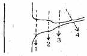
- 1
- 2
- 3
- 4
(정답률: 78%)
11. 산림의 종류 중에서 순림의 장점이 아닌 것은?
- 경제적으로 유리한 수종만으로 임분을 구성할 수 있다.
- 산림작업과 경영이 간편하여 경제적으로 수행될 수 있다.
- 임목의 벌채비용과 시장성이 유리하다.
- 유기물의 분해가 빨라져 무기양료의 순환이 더 잘된다.
(정답률: 87%)
12. 임본전환을 위한 갱신수단의 설명으로 틀린 것은?(오류 신고가 접수된 문제입니다. 반드시 정답과 해설을 확인하시기 바랍니다.)
- 신규조림 - 현재까지 타용도의 무임목지로 있는 나지에 처음으로 실시하는 인공식재
- 재조림 - 개벌적지 또는 산지에서 최후의 종벌 후 나지에 대한 인공식재
- 사전조림 - 임분의 시간적, 공간적 배열을 고려한 후계림을 인공식재
- 보식 - 인공갱신에서 조림목의 본수가 60% 이상 활착되지 못했을 경우 조림지를 완벽하게 보완하기 위해서 하는 인공식재
(정답률: 72%)
13. 수목 호르몬인 지베렐린에 대한 설명으로 틀린 것은?
- 벼의 키다리병을 일으키는 곰팡이에서 처음 추출된 호르몬이다.
- 거의 모든 지베렐린은 알칼리성을 띤다.
- 줄기의 신장을 촉진한다.
- 개화 및 결실을 돕는 역할을 한다.
(정답률: 89%)
14. 간벌의 효과가 아닌 것은?
- 목재의 형질 향상
- 임목의 초살도(梢殺度)의 증가
- 임분의 유전적 형질 향상
- 산불의 위험성 감소
(정답률: 74%)
15. 보통 군상개벌작업에서 한 벌채구역의 크기는 얼마인가?
- 0.01 ~ 0.02ha
- 0.03 ~ 0.1ha
- 0.5 ~ 1ha
- 2 ~ 3ha
(정답률: 56%)
16. 묘목작업 가운데 밭갈이, 쇄토, 작상 작업의 효과가 아닌 것은?
- 토양의 통기성을 증가시켜 준다.
- 토양의 풍화작용을 지연시켜 준다.
- 잡초발생을 억제한다.
- 유용 토양미생물이 증가한다.
(정답률: 86%)
17. 간벌에 대한 설명으로 틀린 것은?
- 간벌은 원칙적으로 인공조림 된 동령림분에 적용되는 조림기술로 확립되었다.
- 간벌은 크게 정성간벌과 정량간벌로 구분한다.
- 정성간벌은 임목본수와 현존량으로 결정한다.
- 지위가 상이면 활엽수종의 간벌개시기는 20~30년이다.
(정답률: 65%)
18. 종자를 파종하고 흙덮기를 할 때 대개 종자지름의 몇 배정도로 덮는가?
- 0.3 ~ 0.5배
- 3 ~ 4배
- 6 ~ 7배
- 9 ~ 10배
(정답률: 85%)
19. 화학적 풍화작용으로서 땅이 회색 또는 담색으로 되는 경향이 있으며 습한 유기물이 쌓인 곳에서 주로 일어나는 작용은?
- 환원작용
- 산화작용
- 가수분해
- 탄산염화
(정답률: 75%)
20. 강산성인 묘포토양의 PH 값을 높이는데 가장 효과적인 방법은?
- 질소 비료의 공급
- 탄산석회의 공급
- 인산 비료의 공급
- 칼륨 비료의 공급
(정답률: 78%)
2과목: 산림보호학
21. 산불진화 방법 중 맞불(back firing)을 놓는 위치로 가장 적당한 곳은?
- 화미(火尾)방향
- 산화 진행방향
- 산화발생 예상지역
- 측면화(側面火) 방향
(정답률: 78%)
22. 산불의 소화약제(消化藥劑)로서 이용되지 않는 것은?
- 제1인산암모늄(MAP)
- 보르도액
- 제2인산암모늄(DAP)
- Forexpan
(정답률: 83%)
23. 불리한 환경에 따른 곤충의 활동정지(quiescence)와 휴면(diapause)에 대한 설명으로 옳은 것은?
- 일장(日長)은 휴면으로의 진입여부 결정에 중요한 요소는 아니다.
- 활동정지는 환경조건이 호전되면 곧 발육이 재개된다.
- 의무적휴면의 예는 흰불나방에서 찾아볼 수 있다.
- 기회적휴면은 1년에 한 세대만 발생하는 곤충이 갖는다.
(정답률: 87%)
24. 소나무 잎에 충영을 형성하여 피해를 주는 솔잎혹파리의 방제방법으로 볼 수 없는 것은?
- 박새, 진박새, 쇠박새, 쑥새 등 조류를 보호한다.
- 포스파미돈 액제로 수간에 나무주사를 한다.
- 솔잎혹파리먹좀벌을 이식하여 천적 기생률을 높인다.
- 피해가 극심한 지역에 동수화제(銅水和劑)를 살포하여 구제효과를 높인다.
(정답률: 67%)
25. 미국흰불나방의 생태에 관하여 잘못 설명한 것은?
- 원산지가 캐나다로, 우리나라에서는 미군 주둔지 근처에서 처음 발견되었다.
- 유충기에 피해를 주며, 잡식성이어서 거의 모든 활엽수의 잎을 가해한다.
- 3령기까지의 유충은 군서생활을 하며, 4령기와 5령기유충은 흩어져 가해한다.
- 유아등을 설치하여 포살하는 것도 권장할 수 있는 방제법의 하나이다.
(정답률: 73%)
26. 항상 규칙적으로 풍속 10~15m/s정도로 부는 바람을 말하며 피해는 만성적으로 눈에 잘 띄지 않으나, 임목의 생장을 감소시키고, 수형을 불량하게 하는 임업상의 피해를 주는 풍해의 종류는?
- 폭풍(暴風)
- 주풍(主風)
- 염풍(鹽風)
- 육풍(陸風)
(정답률: 86%)
27. 최근 우리나라 중부지방을 위주로 참나무류에 발생하는 시들음병의 매개충으로 밝혀진 해충은?
- 오리나무좀
- 광릉긴나무좀
- 가루나무좀
- 소나무좀
(정답률: 86%)
28. 임지를 황폐화시키며 산림생태계의 균형을 깨뜨리는 직접적인 원인은?
- 겨우살이
- 산림곤충
- 낙엽채취
- 상주(霜柱)
(정답률: 79%)
29. 수목병의 표징이 아닌 것은?
- 떡갈나무 흰가루병의 포자
- 밤나무 줄기마름병의 줄기마름
- 소나무 리지나뿌리썩음병의 자실체
- 잣나무 피복가지마름병의 자낭반
(정답률: 75%)
30. 녹병균에 대한 설명으로 틀린 것은?
- 녹병균은 인공배양이 용이하다.
- 녹병균의 포자는 비산 이동이 용이하다.
- 녹병균은 살아있는 식물에만 기생한다.
- 녹병균에는 기주교대하는 것이 다수 있다.
(정답률: 65%)
31. 야생동물의 분포도 작성을 위한 서식정보 수집방법에 해당되지 않는 것은?
- 포획조사
- 육안조사
- 청문 • 설문조사
- 지형조사
(정답률: 71%)
32. 배설물을 종실 밖으로 배출하지 않아 외견상으로 피해식별이 어려운 해충은?
- 밤바구미
- 복숭아명나방
- 솔알락명나방
- 도토리거위벌레
(정답률: 78%)
33. 다음 보기에서 설명하는 산림해충은?
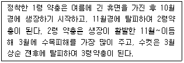
- 솔껍질깍지벌레
- 소나무솜벌레
- 이세리아깍지벌레
- 소나무가루깍지벌레
(정답률: 83%)
34. 나무좀, 하늘소, 바구미 등과 같은 천공성 해충을 방제하는데 다음 중 가장 적합한 방법은?
- 경운법
- 훈증법
- 온도처리법
- 번식장소 유실법
(정답률: 83%)
35. 오동나무 빗자루병의 전염경로로 가장 적당한 것은?
- 토양전염
- 종자전염
- 공기전염
- 충매전염
(정답률: 68%)
36. 수목에 병을 일으키는 생물적 병원이 아닌것은?
- PAN
- 바이러스
- 선충
- 파이토플라스마
(정답률: 82%)
37. 다음은 육묘에 있어서 기주의 저항성을 약화시키는 요인에 해당되지 않는 것은?
- 밀식
- 가지치기
- 일조 부족
- 묘의 웃자람
(정답률: 78%)
38. 밤나무 줄기마름병균 등 자낭균류는 자낭포자와 분생포자(병포자)를 형성한다. 그림과 같은 포자의 명칭은?
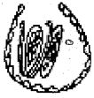
- 자좌(子坐)
- 자낭각
- 병자각
- 자낭반
(정답률: 69%)
39. 산불의 발생형태 중 비화(spot fire)하기 쉽고, 한번 일어나면 진화가 힘들어 큰 손실을 가져오는 것은?
- 지중화(地中火)
- 지표화(地表火)
- 수간화(樹幹火)
- 수관화(樹冠火)
(정답률: 69%)
40. 상륜(霜輪)의 설명으로 맞는 것은?
- 조상(早霜)의 피해로 인하여 일시 생장이 중지되었을적에 생긴다.
- 만상의 피해로 수목의 생장이 한때 중지되었을 때 생기는 일종의 위연륜을 말한다.
- 지형적으로 볼 때 습기가 많은 낮은 지대, 곡간, 소택지 등 배수가 불량한 곳에 상륜의 피해가 많다.
- 한겨울 수액이 저온으로 인하여 얼면서 그 부피가 증가하여 수간의 바깥부분이 수선방향으로 갈라지는 현상이다.
(정답률: 69%)
3과목: 임업경영학
41. 말구직경이 14cm, 재장이 8.5m인 국산재의 재적을 말구직경자승법에 의해 구하면 약 얼마인가?
- 0.135m3
- 0.218m3
- 0.315m3
- 0.423m3
(정답률: 61%)
42. 임목의 평가방법을 분류해 놓은 것 중 연결이 틀린 것은?
- 원가방식 - 비용가법
- 수익방식 - Glaser법
- 비교방식 - 시장가역산법
- 원가수익절충방식 - 임지기망가법응용법
(정답률: 72%)
43. 임지기망가(林地期望價)에 크게 영향을 주는 계산인자가 아닌 것은?
- 주벌 및 간벌수확
- 조림비 및 관리비
- 이율
- 채취비 및 운반비
(정답률: 59%)
44. 산림관리협회(FSC)인증 산림에서 생산된 목재를 사용하여 가공한 제품을 인증하는 제도는?
- 산림 환경경영시스템 인증
- 산림경영 인증
- 가공 ㆍ 유통과정의 관리인증(CoC)
- 함량비률 표시제 인증
(정답률: 72%)
45. 환경해설을 바르게 설명한 것은?
- 특성있는 장소에만 설치하는 교육프로그램이다.
- 환경파괴를 방지하기 위한 안내 표지판의 일종이다.
- 어린이 및 청소년의 자연교육을 위한 교화 시설물이다.
- 이용객의 교육적 욕구를 충족시키기 위한 프로그램이다.
(정답률: 72%)
46. 임목자산의 성장성을 판단할 때 지표로 이용되는 성장의 내부보유율(%) 계산식을 바르게 표시한 것은?
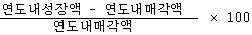
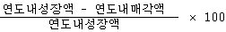
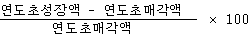
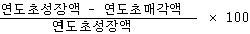
(정답률: 68%)
47. 흉고높이에서 생장추를 이용하여 반경 1cm내의 연륜수 5를 얻었다. 흉고직경이 32cm, 상수 k = 500일때 슈나이더(schneider)식을 이용하여 재적 생장율을 계산하면?
- 2.5%
- 3.1%
- 3.6%
- 4.0
(정답률: 55%)
48. 산림평가의 입장에서 본 산림의 특수성과 가장 거리가 먼것은?
- 산림은 자연적으로 장기간에 걸쳐 생산된 것이므로 동형 ㆍ 동질인 것은 없다.
- 임업의 대상지로서의 산림은 수익을 예측하기가 몹시 어렵고, 적합한 예측방법도 확립되어 있지 않다.
- 산림평가에 있어서 과거의 문제는 중요한 평가인자로 고려하지 않는다.
- 최근의 토지가격의 급상승과 레저산업에의 전용 등 산림에 대한 가치관이 다양화 되어가고 있다.
(정답률: 84%)
49. 어느 일정한 용도에 적합한 크기를 생산하는데 필요한 연령을 기준으로 하여 결정되는 벌기령은 어느 것인가?
- 자연적 벌기령
- 공예적 벌기령
- 재적수확 최대의 벌기령
- 산림순수익 최대의 벌기령
(정답률: 76%)
50. 산림조사면적이 1ha, 표본점 크기는 10m × 10m, 오차율은 5%, 그리고 변이계수가 40일 때 최소한 몇 개의 표본점을 필요로 하는가? (단, 자유도(t)의 값은 2로 계산한다.)
- 72
- 75
- 80
- 81
(정답률: 28%)
51. 효과적인 휴양자원 관리를 위해서는 휴양지역의 속성, 즉 그 지역의 특성을 아는 것이 중요하다고 한다. 그 이유에 가장 합당한 것은?
- 다른 자원의 이용에 대한 경쟁력과 갈등을 규명하는데 기초정보를 제공한다.
- 야외 휴양지는 많은 위험요소를 가지고 있어 이를 사전에 예방할 수 있다.
- 야외활동을 통하여 이용객의 욕규를 충족시킬 수 있는 서비스 개발이 가능하다.
- 현재의 수준을 파악하여 더욱 서비스의 질을 높은 수준으로 개선하는 계기가 된다.
(정답률: 61%)
52. 임목의 평균생장량(Y/t)과 연년생장량(dY/dt)를 나타내는 곡선 그래프의 설명이 잘못된 것은?
- 초기에는 연년생장량이 크다.
- 연년생장량의 극대점이 평균생장량의 극대점보다 빨리 온다.
- 연년생장량의 극대점에서 평균생장량은 일치한다.
- 평균생장량의 극대점에서 연년생장량은 일치한다.
(정답률: 69%)
53. 국유림경영의 목표 중 다섯가지의 주목표에 속하지 않는 것은?
- 경영수지 개선
- 임산물 생산기능
- 고용기능
- 산림생태계의 보호 및 다양한 산림기능의 최적 발휘
(정답률: 45%)
54. 임목의 성장량 측정에서 현실성장량의 분류에 속하지 않는 것은?
- 연년성장량
- 정기성장량
- 벌기성장량
- 벌기평균성장량
(정답률: 64%)
55. 임업소득의 계산방법 중에서 자본에 귀속하는 소득을 계산하면? (단, 임업소득은 10,000,000원, 지대는 1,000,000원, 가족노임추정액은 5,000,000원, 자본이자는 50,000원이다.)
- 3,500,000원
- 4,000,000원
- 4,500,000원
- 10,500,000원
(정답률: 58%)
56. 휴양자원의 이용과 그에 따라 휴양자원이 받는 영향의 관계에서 이용초기에는 휴양자원이 받는 영향이 크지만 이용이 많아질수록 그 영향의 정도가 점차 낮아진다는 의미에 해당하는 것은?
- 이용량을 더욱 확대해야 한다는 의미이다.
- 앞으로 규제를 더욱 강화해야 한다는 의미이다.
- 더 이상 이용객을 수용해서는 아니 됨을 의미한다.
- 더 이상의 규제가 필요 없음을 의미한다.
(정답률: 72%)
57. 임가(林家)의 소비경제가 임업에 의하여 지탱되는 정도를 나타낸 것은?
- 임업순수익
- 임업의존도
- 임업소득률
- 임업소득가계충족률
(정답률: 39%)
58. 평가하려는 임목과 비슷한 조건과 성질을 가지는 임목의 실제의 거래 시세로서 가격을 결정하는 임목 평가방법은?
- 임목비용가
- 임목기망가
- 법정축적가
- 임목매매가
(정답률: 71%)
59. 소나무림의 벌기가 60년, 이율이 5%일 때, 수입의 전가합계가 24,219,650원, 지출의 전가합계가 16,888,350원이라면, 임지기망가는 약 얼마인가?
- 393,200원
- 414,600원
- 68,471,400원
- 136,942,800원
(정답률: 39%)
60. 우리나라 산림소유 구분 중 가장 많은 면적 비율을 차지하는 산림은?
- 공유림
- 사유림
- 요존 국유림
- 불요존 국유림
(정답률: 86%)
4과목: 임도공학
61. 다음 중 산지에서 임도의 기능을 완성하기 위하여 교량을 설치할 때 적합하지 않은 지점은?
- 지질이 견고하고 복잡하지 않은 곳
- 하상(河床)의 변동이 적고 하천의 폭이 협소한 곳
- 계류의 방향이 바뀌는 굴곡진 곳
- 교량면을 하천 수면보다 상당히 높게 할 수 있는곳
(정답률: 80%)
62. 임도 횡단배수구 설치장소로 적당하지 않은 곳은?
- 구조물 위치의 전ㆍ후
- 노면이 암석으로 되어 있는 곳
- 유햐(流下)방향의 종단물매 변이점
- 외쪽무매로 인한 옆도랑울이 역류하는 곳
(정답률: 72%)
63. 곡선설치법에서 교각법에 의해 곡선을 설치할 때, 곡선제원이 교각이 32°15', 곡선반지름이 200m일 경우 절선장은 얼마인가? ?
- 57.84m
- 65.23m
- 75.35m
- 82.54m
(정답률: 40%)
64. 일반적으로 철선돌망태를 제작할 때 사용하는 아연도금철선의 종류는?
- 6~7번 선
- 8~10번 선
- 11~12번 선
- 13~14번 선
(정답률: 65%)
65. 산림관리기반시설의 설계 및 시설기준에서 간선임도의 설계속도는 얼마인가?
- 40~30km/시간
- 40~20km/시간
- 30~20km/시간
- 20~10km/시간
(정답률: 77%)
66. 임도의 노체와 노상을 구축하는 내용으로 가장 알맞은 것은?
- 노체는 자동차의 하중을 직접적으로 받지 아니하므로 재료에 구애받을 필요가 없다.
- 각 층의 강도는 노면에 가까울수록 큰 응력에 견디어야 하므로 상층부로 시공할수록 양질의 재료를 사용하여야 한다.
- 노상은 노체의 최하층으로 차량의 하중을 직접 받지는 않지만 상질의 재료를 사용하여야 한다.
- 임도의 기층은 노면 위에 시설하는 자갈, 쇄석, 콘크리트 포장면을 말한다.
(정답률: 72%)
67. 양각기계획법을 이용하여 1/25,000의 지형도에서 임도의 종단물매 5%의 노선을 긋고자 할 때, 지형도 상에서의 양각기 1폭(수평거리)은 얼마인가?(단, 등고선의 고저차는 10m이다.)
- 6mm
- 7mm
- 8mm
- 9mm
(정답률: 68%)
68. 임도 시공시 흙깎기 공사의 내용과 거리가 먼 것은?
- 근주지름 30cm 이상의 입목은 기계톱으로 벌채한다.
- 암석의 굴착시 경암은 불도저에 부착된 리퍼로 굴착하는 것이 유리하다.
- 흙깎기공사를 시공할 때에는 현장에 적당한 간격으로 흙일겨냥틀을 설치한다.
- 완성된 임도의 양부(良否)는 시공시 흙의 수분상태와 지하수 위치에 의해 좌우되므로 함수비가 높을 때는 함수비를 저하시킬 필요가 있다.
(정답률: 68%)
69. 수확한 임목을 공장에서 하지 않고 임내에서 박피(剝皮)하는 이유와 거리가 먼 것은?
- 신속한 건조
- 운재작업의 용이
- 병충해 피해방지
- 고성능 기계화로 생산원가의 절감
(정답률: 81%)
70. 종단측량시 지반고(地盤高)가 시점 10m, 종점 50m이고 수평거리가 1000m 일 때, 종단기울기(%)는 얼마인가?
- 4%
- 5%
- 6%
- 7%
(정답률: 61%)
71. 설계속도 30km/시간, 외쪽물매 5%, 타이어의 마찰계수 0.15일 때의 곡선반지름은 약 얼마인가?
- 27m
- 32m
- 33m
- 35m
(정답률: 55%)
72. 다음의 고저측량을 설명한 것 중에서 틀린 것은?
- 전시(F.S)와 후시(B.S)가 모두 있는 측점을 이기점(T.P)이라 한다.
- 기계고(I.H)는 지반고(G.H) + 후시(B.S)이다.
- 기점과 최종점의 고저차는 후시의 합계 + 이기점의 전시의 합계이다.
- 지반고(G.H)는 기계고(I.H) - 전시(F.S)이다.
(정답률: 61%)
73. 다음 중 암석의 굴착시 리퍼작업(ripping)이 곤란한 것은?
- 사암, 혈암
- 혈망, 점판암
- 안산암, 화강암
- 점판암, 사암
(정답률: 75%)
74. 다음의 평판측량법 중 방사법(사출법)을 설명하고 있는 것은?
- 장애물이 많은 경우에 사용된다.
- 평판을 측점마다 옮겨서 측량한다.
- 한곳에서 주위를 넓게 측정할 수 있다.
- 구역이 좁고 교차법을 사용할 수 없는 경우에 사용한다.
(정답률: 72%)
75. 계단의 뒷부분에 되메우기를 하며, 되메우기 부분에 묘목을 심고 나출된 비탈면을 안정 녹화하는 공법은?
- 평떼붙이기공법
- 식생자주공법
- 비탈선떼붙이기공법
- 줄떼다지기공법
(정답률: 56%)
76. 다음 중 임도의 성토사면에 있어서 붕괴가 일어날 가능성이 적은 경우는?
- 공극수압이 감소될 때
- 함수량의 증가
- 토양의 점착력이 약해질 때
- 동결 및 융해가 반복될 때
(정답률: 82%)
77. 산림관리기반시설의 설계 및 시설기준에 의거 절토ㆍ성토한 경사면이 붕괴 또는 밀려 내려갈 우려가 있는 지역에는 사면길이 2~3m마다 소단을 설치할 수 있는데 이 때 소단의 폭은 얼마인가?
- 0.1~0.5m
- 0.5~1.0m
- 1.5~2.5m
- 2.5~3.5m
(정답률: 70%)
78. 집재가선에 사용되는 도르래 중 반송기에 매달려서 화물의 승강에 이용되는 도르래는 어느 것인가?
- 삼각도르래
- 죔도르래
- 짐달림도르래
- 안내도르래
(정답률: 73%)
79. 트래버스측량(다각측량)에서 위거와 경거의 관계가 <그림>과 같을 때 측선 AB의 위거(LAB)를 계산하기 위한 식은? (단, NS는 자오선, EW는 위선, θ는 방위각이다.)
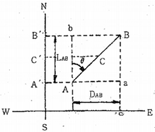
- AB sin θ
- AB cos θ
- AB sec θ
- AB cot θ
(정답률: 72%)
80. 교각법에 의한 곡선 설치시 가장 주요한 인자를 묶은 것으로 옳은 것은?
- 방위각, 교각, 내각
- 성토고, 절취고, 계획고
- 경사각, 사거리, 수직거리
- 곡선시점, 곡선중점, 곡선종점
(정답률: 58%)
5과목: 사방공학
81. 앞 모래언덕 육지 쪽에 후방 모래를 고정하여 그 표면을 안정시키고, 식재목이 잘 생육할 수 있는 환경 조성을 위해 실시하는 공법은?
- 구정바자얽기
- 모래덮기공법
- 퇴사울타리공법
- 정사울세우기공법
(정답률: 72%)
82. 다음 중에서 붕괴형 산사태에 해당하지 않는 것은?
- 산붕
- 붕락
- 땅밀림
- 포락
(정답률: 70%)
83. 중력댐의 안정조건 중에서 수평분력의 총합과 수직분력의 총합, 제저와 기초지반과의 마찰계수를 고려하여 계산하는 안정조건은 무엇인가?
- 전도에 대한 안정
- 활동에 대한 안정
- 제체의 파괴에 대한 안정
- 기초지반의 지지력에 대한 안정
(정답률: 52%)
84. 자연식생이 발달된 산림으로 현대화된 도시에 둘러싸여 환경피해는 입고 있으나 대체적으로 산림생태계가 유지되는 식물집단은?
- 재배식물집단
- 자생식물군집
- 도시형 식물군집
- 농촌형 식물군집
(정답률: 65%)
85. 채광지(mining area)를 복구하기 위해 사용되는 공법이 아닌 것은?
- 기초옹벽식 돌쌓기
- 편책공법
- 파종공법
- 사초(砂草)심기공법
(정답률: 68%)
86. 식생공법을 적용할 때 유의사항이 아닌 것은?
- 빠르고 확실한 식물피복을 완성하기 위하여 식물이 생육할 수 있는 기반을 확보한다.
- 환경에 적합한 식물을 선택하고, 경관을 고려하여 사용한다.
- 수분을 확보하고 양분을 보급하며, 토양침식방지공법을 사용한다.
- 녹화기초공법은 비용상의 문제로 고려하지 않아도 무방하다.
(정답률: 85%)
87. Q = CIA로 나타내는 최대홍수량의 방법은? (단, 여기서 Q는 유역출구에서의 최대홍수유량, C는 배수유역의 특성에 따라 결정되는 유출계수, I는 강우강도, A는 유역면적이다.)
- 시우량법
- 홍수위흔적법
- 유출량법
- 합리식법
(정답률: 55%)
88. 돌쌓기 공작물 중 화강암 견치돌쌓기의 허용강도는? (단, 단위는 ton/m2이다.)
- 165 ~ 220
- 229 ~ 275
- 275 ~ 330
- 350 ~ 450
(정답률: 66%)
89. 요사방지의 유형분류와 거리가 먼 것은?
- 황폐산지
- 붕괴지
- 산사태지
- 훼손지
(정답률: 36%)
90. 암석 산지나 암벽 녹화용으로 사용되는 사방식재 수종으로 적합하지 못한것은?
- 병꽃나무
- 노간주나무
- 눈향나무
- 상수리나무
(정답률: 75%)
91. 황폐지를 진행상태 및 정도에 따라 구분할 경우 초기황폐지 단계를 설명한 것은?
- 산지 비탈면이 여러 해 동안의 표면침식과 토양유실로 토양의 비옥도가 떨어진 임지
- 외관상으로 황폐지로 보이지 않지만, 임지 내에서 이미 침식상태가 진행 중인 임지
- 산지의 임상이나 산지의 표면침식으로 외견상 분명히 황폐지라 인식할 수 있는 상태의 임지
- 지표면의 침식이 현저하여 방치하면 가까운 장래에 민둥산이 될 가능성이 높은 임지
(정답률: 65%)
92. 일반적인 모래막이 공작물의 형상이 아닌 것은?
- 주걱형
- 위형
- 침상형
- 자루형
(정답률: 63%)
93. 비탈파종녹화를 위한 파종량 산출식으로 옳은 것은?(단, W는 파종중량(g/m2), S는 평균입수(입/g), B는 발아율(%), C는 발생기대본수(본/m2), P는 순량율(%)이다.)
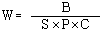
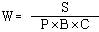
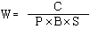
(정답률: 67%)
94. 해안과 일반적인 주풍(主風)방향의 설명 중 틀린 것은?
- 모래언덕은 주풍과 밀접한 관계가 있다.
- 해안지방에서의 주풍은 대부분 바다에서 육지를 향해분다.
- 주풍방향과 해안선의 각도가 직각일 경우에 주풍이 파도와 모래에 미치는 영향은 가장 적다.
- 바람은 파도와 연안류를 일으키며, 파도로 육지에 밀려온 모래를 이동시키는 원동력이 된다.
(정답률: 81%)
95. 비탈 파종녹화공종 ㆍ 공법에 해당하는 것은?
- 약액주입공법
- 종자분사파종공법
- 비탈 지오웨브공법
- 비탈 바자얽기공법
(정답률: 65%)
96. 계상에서 유수의 소류력이 최소로 되고 안정물매가 최대로 되는 기울기를 무엇이라고 하는가?
- 평형기울기
- 편류기울기
- 보정기울기
- 홍수기울기
(정답률: 49%)
97. 석재를 사용하여 구축물을 만들 때 비탈물매가 1 : 1보다 완만한 경우게 사용되는 것은?
- 찰쌓기
- 돌붙임
- 골쌓기
- 메쌓기
(정답률: 51%)
98. 계간사방계획 중에서 재해가 발생했을 때 하류의 가옥과 경지 등을 복구하기 위한 계획은?
- 경상계획
- 예방계획
- 응급계획
- 민생계획
(정답률: 70%)
99. 배수로의 횡단면에서 윤변이 10m, 유적이 15m2일때 경심은 몇 m 인가? (단, 이 때 수면의 나비가 매우 넓어 윤변과 수면의 나비가 같다고 본다.)
- 0.5m
- 1.0m
- 1.5m
- 2.0m
(정답률: 77%)
100. 양단면적이 각각 10 m2, 20m2이고, 양단면적간의 거리가 20m 인 비탈면의 토사량을 평균단면적법에 의해 구하면?
- 300m3
- 400m3
- 500m3
- 600m3
(정답률: 60%)